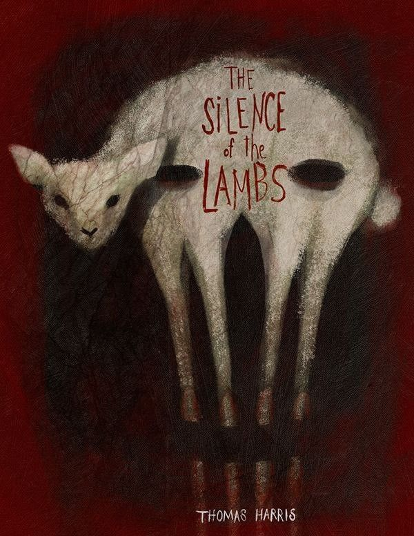

About Me
I am a student at the University of Information Technology (UIT), Vietnam, majoring in Information Systems.
My interests lie in artificial intelligence, algorithms, and system design. I enjoy understanding how technologies actually work beneath the surface rather than only using them at a high level.
Currently, I spend time exploring AI systems, experimenting with small projects, and learning how modern software systems are built and scaled.
Tech Stack
RAG Chatbot
A Retrieval-Augmented Generation chatbot that combines document retrieval with language models to generate more accurate responses from external knowledge sources.
Chuck King (Web Game)
A browser-based rage platformer inspired by Jump King. The game focuses on charge-based jumping mechanics where players must carefully control power and direction to climb.
Flappybird x Silly Bird
A small Flappy Bird – inspired browser game built with HTML5 Canvas, CSS3, and vanilla JavaScript. The game includes an extra fun and experimental "Silly Bird" mode while exploring simple physics mechanics and browser-based game development. This project was created for learning and educational purposes.

Favorite Book
The Silence of the Lambs
The Silence of the Lambs is a psychological thriller that follows FBI trainee Clarice Starling as she seeks help from the brilliant yet dangerous Dr. Hannibal Lecter.
What makes the novel compelling is its deep exploration of human psychology, manipulation, and the complex relationship between hunter and hunted.
Movie Review
Báu vật trời cho
"Báu Vật Trời Cho" is a gentle and heartfelt Vietnamese Tet film that blends humor with strong family emotions. Set in a beautiful coastal fishing village, the movie stands out with its peaceful scenery and warm atmosphere. Although it is a comedy, the humor does not rely on exaggerated jokes or loud punchlines. Instead, the film creates moments of quiet laughter that come from everyday life, allowing the audience to feel a sense of happiness, warmth, and the simple joy of peaceful living.
It is a good example of how contemporary Vietnamese cinema is evolving and experimenting with new narratives.

AI Corner
Artificial Intelligence may appear magical, but fundamentally it is built on mathematics and statistics.
Modern AI systems transform data such as text or images into numerical representations called vectors. These vectors allow algorithms to measure similarity, detect patterns, and make predictions based on large datasets.
Large language models learn from enormous amounts of data and generate responses by predicting the most probable sequence of words given a context.

Contact
Email: qphunguit@gmail.com
GitHub: https://github.com/Prosperum26